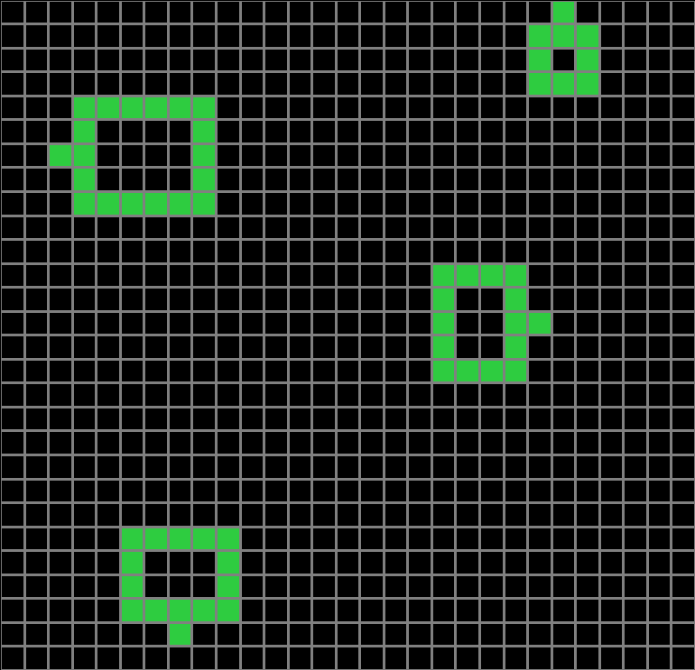
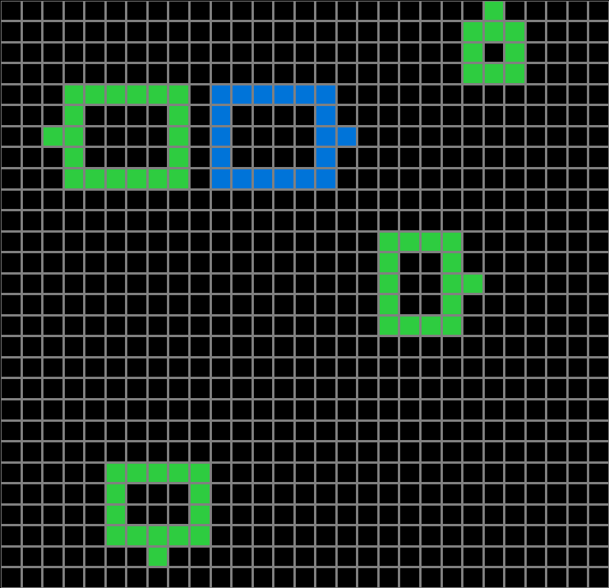
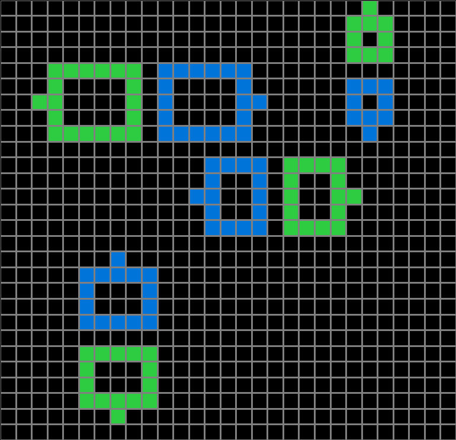
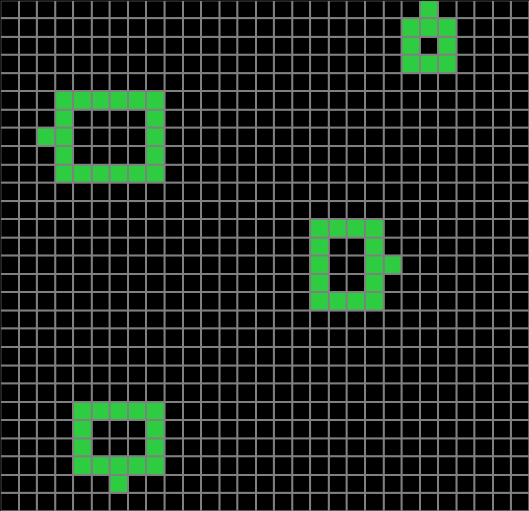
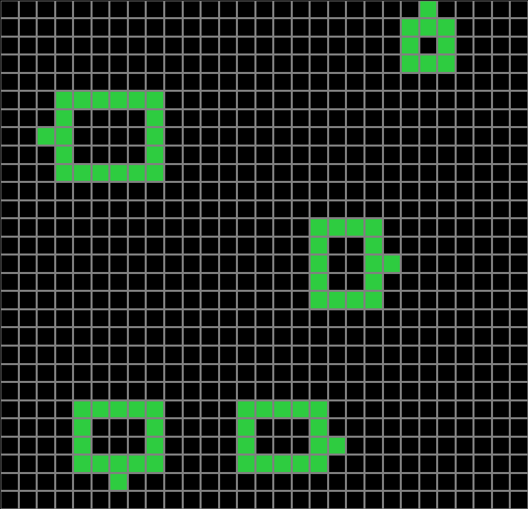
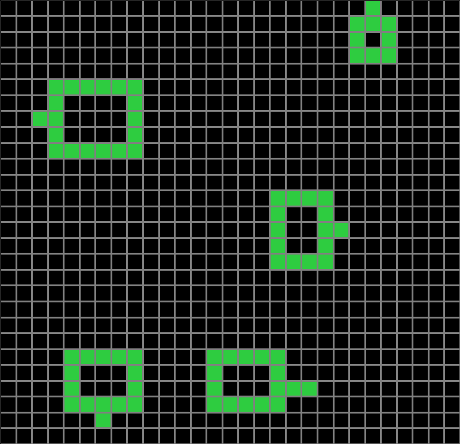

Participant 1
Initial description: This pattern requires creating a mirrored version of the green objects. If the green objects point north or south then the mirrored objects are light blue. If the mirrored objects point east or west then they are blue.
Final description: This pattern requires creating a mirrored version of the green objects. If the green objects point north or south then the mirrored objects are light blue. If the mirrored objects point east or west then they are blue.

Participant 2
Initial description: mirror the shapes, with dark blue for shapes with the extra dot on the left or right and light blue for shapes with the extra dot on top or bottom.
Final description: mirror the shapes, with dark blue for shapes with the extra dot on the left or right and light blue for shapes with the extra dot on top or bottom.

Participant 3
Initial description: copy green shape but reflected - in dark blue if shape is pointing left or right, light blue if pointing up or down
Final description: copy green shape but reflected - in dark blue if shape is pointing left or right, light blue if pointing up or down

Participant 4
Initial description: If rectangle has the extra square pointing left, make a mirror image of the rectangle in dark blue one square to the right. If rectangle has the extra square pointing right, make a mirror image of the rectangle in dark blue one square to the left. If rectangle has the extra square pointing up, make a mirror image of the rectangle in light blue one square down. If rectangle has the extra square pointing down, make a mirror image of the rectangle in light blue one square up
Final description: If rectangle has the extra square pointing left, make a mirror image of the rectangle in dark blue one square to the right. If rectangle has the extra square pointing right, make a mirror image of the rectangle in dark blue one square to the left. If rectangle has the extra square pointing up, make a mirror image of the rectangle in light blue one square down. If rectangle has the extra square pointing down, make a mirror image of the rectangle in light blue one square up

Participant 5
Initial description: To make sure the squares were the same size with the same number of squares filled as the test input.
Final description: I thought that the moral of the story was that each one had to have the exact same matching opposite to where they sat.



Participant 6
Initial description: Mirror the shapes on the grid, with vertical mirrored shapes being light blue and horizontally mirrored shapes in dark blue.
Final description: Mirror the shapes on the grid, with vertical mirrored shapes being light blue and horizontally mirrored shapes in dark blue.

Participant 7
Initial description: replicate the pattern, if even, dark blue, if odd, light blue
Final description: replicate the pattern, if facing horizontal, dark blue, if facing vertical, light blue


Participant 8
Initial description: Create a mirrored image of the green shapes one space behind them. If the shape is pointing horizontally, make it dark blue. If the shape is pointing vertically, make it light blue.
Final description: Create a mirrored image of the green shapes one space behind them. If the shape is pointing horizontally, make it dark blue. If the shape is pointing vertically, make it light blue.

Participant 9
Initial description: The grid remains the same size, the green shapes are reflected and change color depending on the direction the small square is pointing, dark blue for left-right, and light blue for top-down
Final description: The grid remains the same size, the green shapes are reflected and change color depending on the direction the small square is pointing, dark blue for left-right, and light blue for top-down

Participant 10
Initial description: Create a 29x29 grid, and mirror the horizontal shapes with the dark blue color and mirror the vertical pointing shapes with the light blue color.
Final description: Create a 28 height 29 length grid and mirror the shapes with a space in between them. The horizontal pointing shapes should be mirrored with dark blue and the vertical pointing shapes should be mirrored with light blue.


Participant 11
Initial description: So on this one, the grid stayed the same but shapes were mirrored, greens pointing left or right, mirrored darker blue, green pointing up or down mirrored teal
Final description: So on this one, the grid stayed the same but shapes were mirrored, greens pointing left or right, mirrored darker blue, green pointing up or down mirrored teal

Participant 12
Initial description: Mirror the first images and if they are pointing left or right, they are dark blue, if they point up or down, they are light blue
Final description: Mirror the first images and if they are pointing left or right, they are dark blue, if they point up or down, they are light blue

Participant 13
Initial description: I am not exactly sure.
Final description: I don't know what the rule is.



Participant 14
Initial description: The figures were flipped in a mirror image. Also, the color of the mirror image was determined by which way they were facing in the grid.
Final description: The figures were flipped in a mirror image. Also, the color of the mirror image was determined by which way they were facing in the grid.

Participant 15
Initial description: the green figures are mirrored horizontally or vertically based on the placement of the tab. vertically mirrored ones use light blue and horizontally use dark blue.
Final description: the green figures are mirrored horizontally or vertically based on the placement of the tab. vertically mirrored ones use light blue and horizontally use dark blue.